| 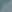 |
| Preparing Source Data for Nebula | |
| 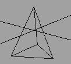 Example: source.obj |
1.
Wavefront OBJ Raw Data. To create your
3D-Model you may use any 3D-Modeller that is capable to
handle polygonal objects, per vertex UV coordinates and
to save Wavefront OBJ Objects. Save your Object as Wavefront OBJ. The resulting ASCII File should look like this:
v -49.999992 -100.000000 -86.602554
v -50.000008 -100.000000 86.602539
v 100.000000 -100.000000 0.000000
v 0.000000 100.000000 0.000000
vt 0.250000 -0.933013
vt 0.250000 -0.066987
vt 1.000000 -0.500000
vt 0.000000 0.000000
...
vn -0.970142 0.242536 -0.000000
vn -0.970142 0.242536 -0.000000
vn 0.485071 0.242536 -0.840168
vn 0.000000 -1.000000 -0.000000
f 1/1/12 3/3/4 2/2/7
f 1/4/10 2/5/9 4/8/1
f 2/5/8 3/6/6 4/8/2
f 3/6/5 1/7/11 4/8/3
Mostly it will not be necessary for you to edit this
3D-Data by hand, but using a simple ASCII Format also
allows simple scripts for manipulating that data, you can
easily have "a look" into the scripts if bugs
appear and - last but not least - Wavefront OBJ is an
industry standard for polygonal objects and supported by
nearly every 3D program. |
| Example: object.n3d | 2.
Polygon Pipeline. Till now we have a
nonoptimized 3D-Object. Nebula will not be able to show
this. You have to do some optimization on it. The
WF-Tools (you may compile them yourself or download
executables from the Download-Page.) - a collection of
command line tools - offer a variety of optimization for
Wavefront objects. At least you have to flatten the
3D-Object. Open a shell. Make sure that the WF-Tools are
in your search path. Type:
cd [the folder you saved the object]
wfflatten <yourobject >targetfile
Note: The angle brackets '<' & '>' are part of the command. Now the targetfile is ready for Nebula. |
| 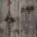 Example: texture.bmp |
3. Preparing a texture. Use any paint program to create your texture. For image textures Nebula supports the Windows BMP Format. Textures has to be square. Indexed Colors (256 colors, color table) and RGB colors (Truecolor) supported. Both of them has to be uncompressed. Texture sizes of 2^n (32,64,128 etc.) recommended. Save this image file to your folder. |
| Loading and displaying a 3D Object | |
| 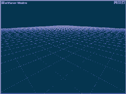 Example: startup.tcl |
4.
Starting the Nebula Console. Open a shell.
Make sure that nlaunch.exe is in your path. Type:
nlaunch startup.tcl
|
| 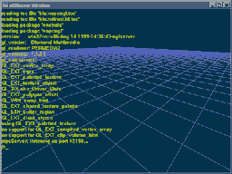 |
5.
Using the onscreen console. Press ESCAPE
to activate the the onscreen console. You can use the
console to create and modify Nebula objects on the fly.
Type:
dir
You will see:
sys usr observer
/>_
These are runtime-directories of the internal Nebula structure. Imagine the internal Nebula structure as a virtual filesystem. Every object, each server or handler uses such an internal directory to show to the script interface. Using the sel (similar to cd) command you can move within these structures. Move to the /usr/scene directory.
sel /usr/scene
/usr/scene is a special directory: every object
created in this directory, will be visually
triggered/shown. |
| 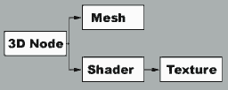 |
6.
Creating a standard 3D node. Type:
new n3dnode test
sel test
new nmeshnode mesh
new nshadernode shader
new ntexarraynode tex
This creates a basic 3D Node, with the standard
subnodes, which define 3D Mesh, texture and material.
Currently nothing is visible since all the subnodes are
empty. The basic syntax of new is: |
| 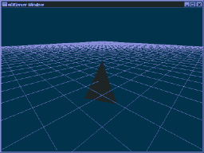 | 7.
Loading the prepared ressources. Now we simply
have to add the prepared raw data to the subnodes. Type:
sel mesh
setfilename object.n3d
A black shape should be visible in the 3D view. This is since we still do not have any material, light or texture information. So we will have to adjust the other subnodes. Since NEBULA now supports multitexturing and complex renderstates, a shader needs a lot of data to be rendered correctly. We do not need to type them into the console by hand. Just load a predefined shader with the source command.
sel ..
sel shader
source shader.n
For more information on how shaders work please have a
look into shader.n and shaders.txt
sel ..
sel tex
.settexture 0 texture.bmp none
The shape should now be textured. |
| 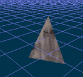 |
8.
Watching the scene. Now a simple textured and
flat shaded object is visible. You can interactively
watch the scene. Hold your mouse buttons and drag the
mouse to move the camera as described below. 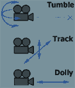 Right Mouse Button: Tumble Left Mouse Button: Track Middle Mouse Button: Dolly |
| 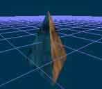 Example: light.n |
9.
Lighting. Changing a few statements and adding
a point light will give us better lighting. First we need
to enable lighting in the shader.
.setlightenable true
sel ..
Note: the '.' at the start of the command, this is used to seperate the script command from the object's name, in this case we mean the current object, although it's not strictly necessary when referring to the current object. To call a script command on an object other than the current one you could type /usr/scene/test/shader.setlightenable. We will use a prepared nebula file, to create two color lighting.
get light.n
Have a look at light.n, to see how the lights were setup. |
| More Details | |
10.
Saving your creation. Select the object (in
this example we are useing absolute path names) you want
to save and type:
sel /usr/scene/test
.save
This will save the object as test.n in the current directory. If you want to save the object with a different name type: .saveas object Now have a look into your current directory. You will find a new file named object.n This is a simple Nebula ASCII file. Use a text editor to examine the Nebula file format. Please note that Nebula uses the same script syntax for online manipulation of scenes, and saving them. Files saved like this can be loaded back into Nebula via get filename . |
|
| 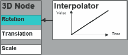 | 11.
Adding a simple animation. It is very simple
to add some movement to the scene. First we create an
interpolator below a n3dnode. Then the interpolator is
connected to the Y-Rotation of the n3dnode. Finally we
add two keyframes with a rotation of 0 to 360 degrees.
sel /usr/scene/test
new nipol rot
sel rot
.connect ry
.addkey1f 0 0
.addkey1f 2 360
sel ..
The object should now rotate. You can add animated values to nearly any parameter, just by changing the .connect statement. You can add interpolators to light or material colors, transparency, position, scale etc. |
Copyright © 1998-2001 Radon Labs GmbH. All rights reserved.